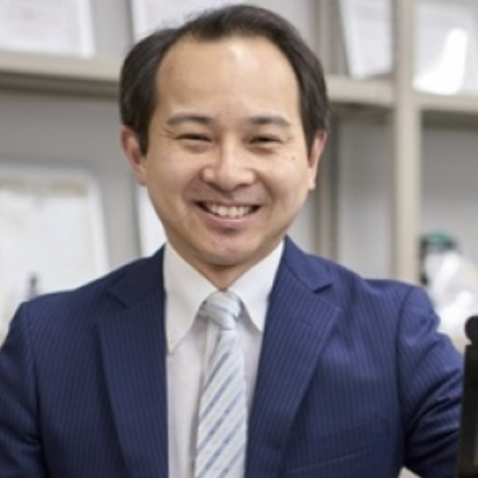
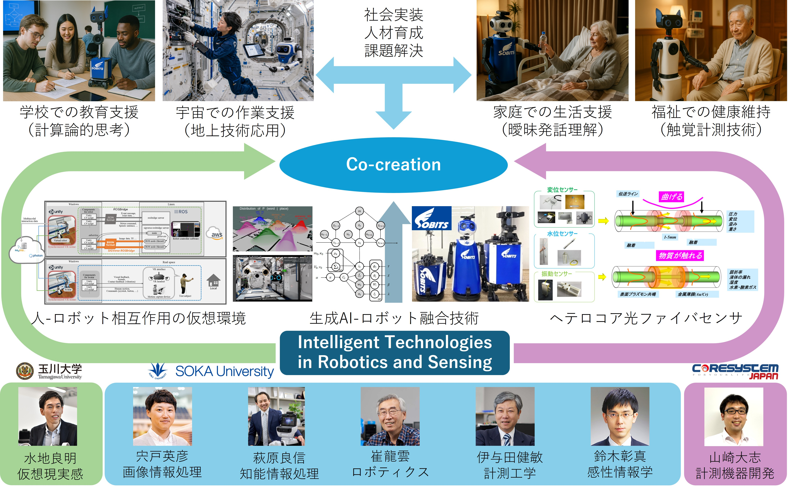
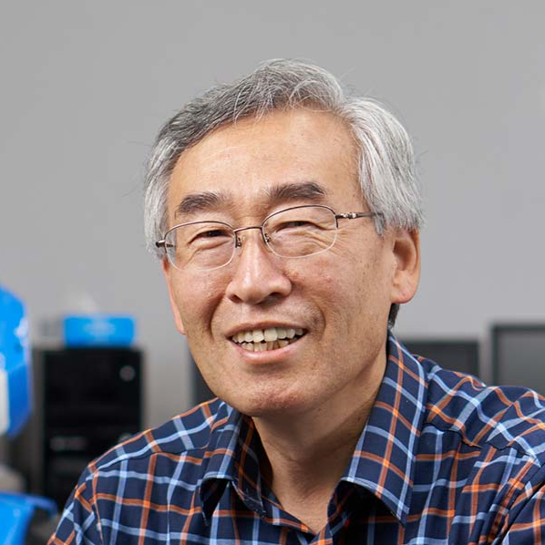
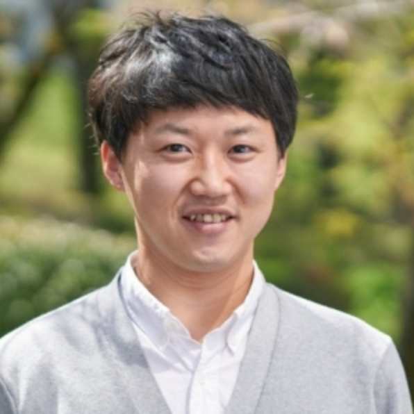
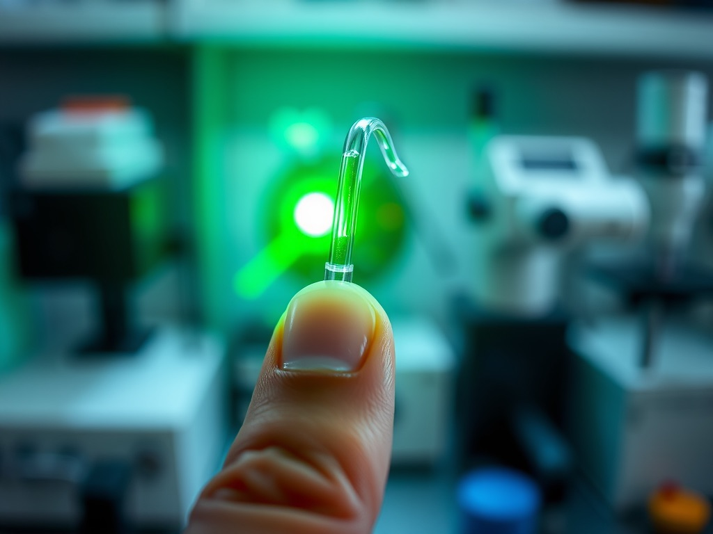
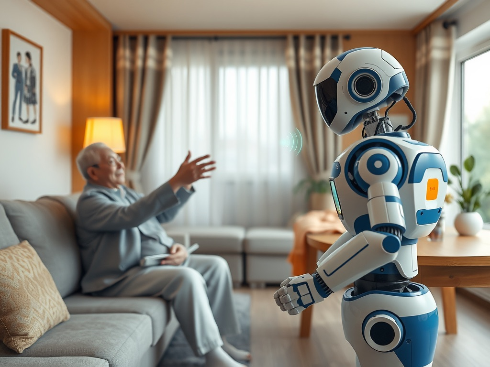
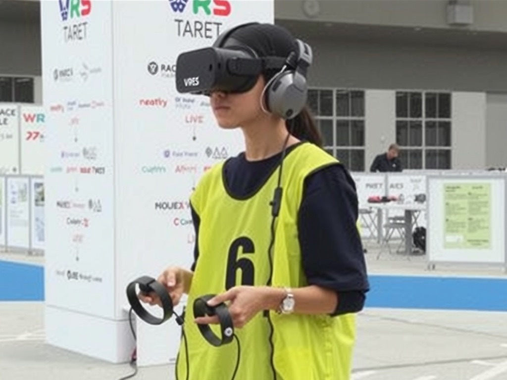
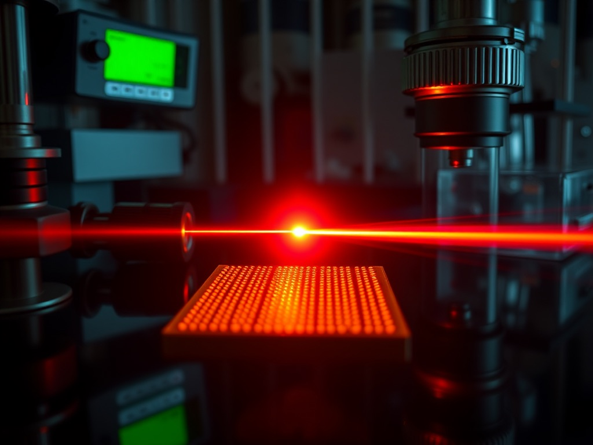
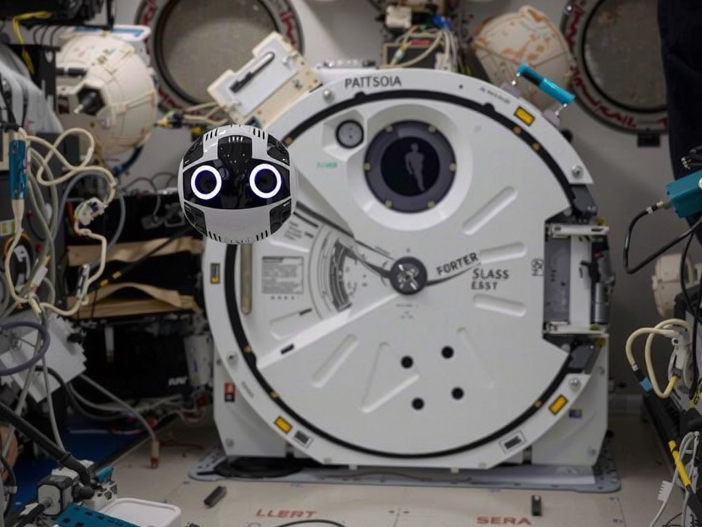
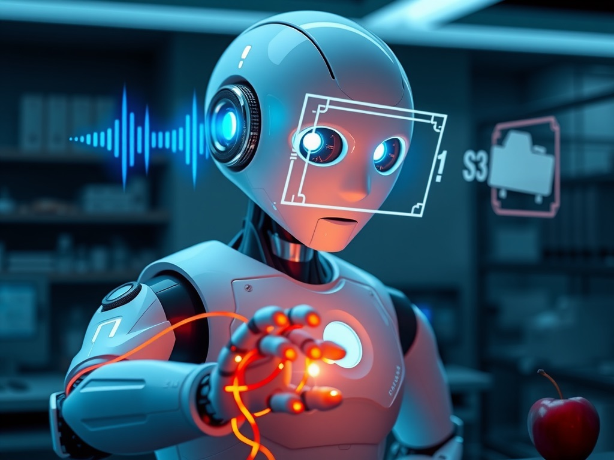

萩原 良信
准教授 / 特任研究員
Assoc. Prof.
知能情報処理
Intelligent Info.
Soka University / Tamgawa Univiersity
Center for Co-creation in Intelligent Robotics and Sensing
創価大学 理工学部 重点研究拠点
AI ロボット・センシング・仮想環境を統合し、実環境で柔軟に行動する次世代ロボットシステムの構築を目指す。産学・地域・学生との「共創」を核に、研究・教育・社会実装を推進します。
Integrating AI robotics, sensing, and virtual environments toward next-generation robotic systems — advancing research, education, and social implementation through co-creation.

本拠点「CIRoS」は、創価大学理工学部に設置された学際的研究拠点です。知能ロボティクスとセンシングの研究力を基盤とし、次世代の人間–AI ロボット共創社会の実現に向けた技術創出を目指します。
CIRoS is an interdisciplinary research hub established in the Faculty of Science and Technology at Soka University, driving technological innovation toward a next-generation human–AI robotic co-creation society.
AI ロボット・センシング・仮想環境を統合し、現実世界の多様な状況に柔軟に適応する自律 AI ロボティクス（フィジカル AI）の確立を目指します。地域社会・産業界・学生との「共創（Co-creation）」を中核理念に据えています。
The hub pursues physical AI — autonomous systems adapting flexibly to diverse real-world situations. Co-creation with industry, communities, and students is a core principle.
連携機関
Partner Institutions
本センターは CIRoS 拠点の中核組織として、センター長・副センター長・センター員が協力して研究・教育・社会実装活動を推進します。
As the core organization of the CIRoS hub, the center drives research, education, and social implementation through the collaboration of its director, vice director, and researchers.








